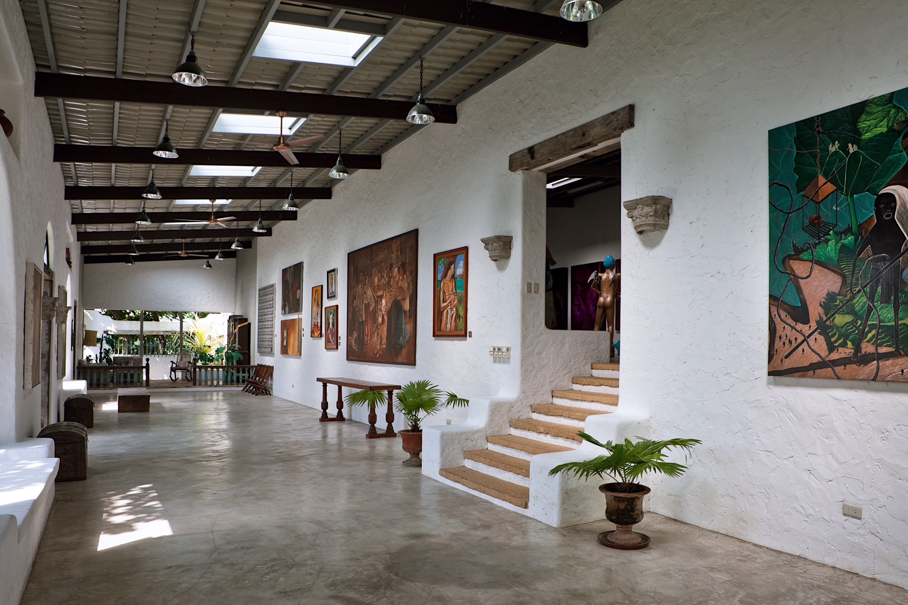
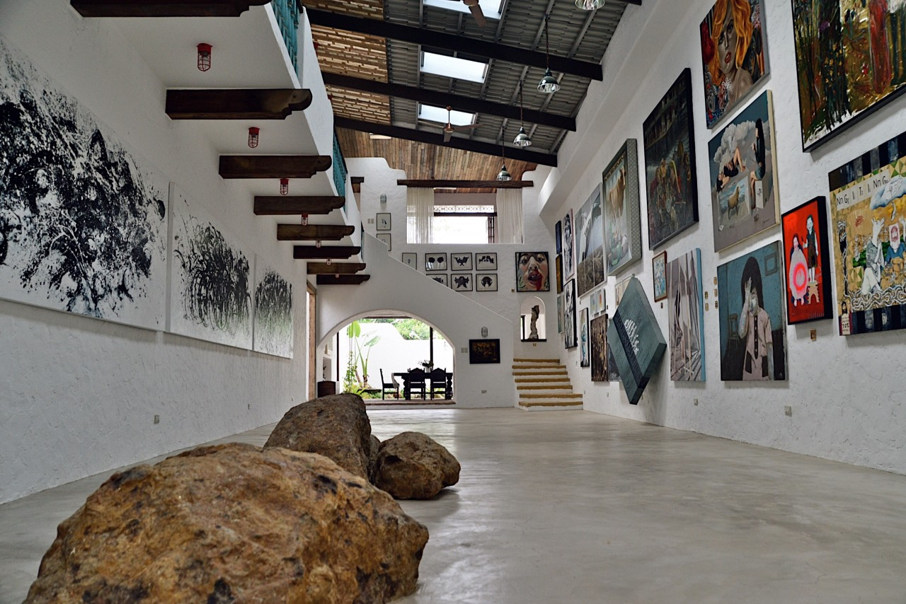
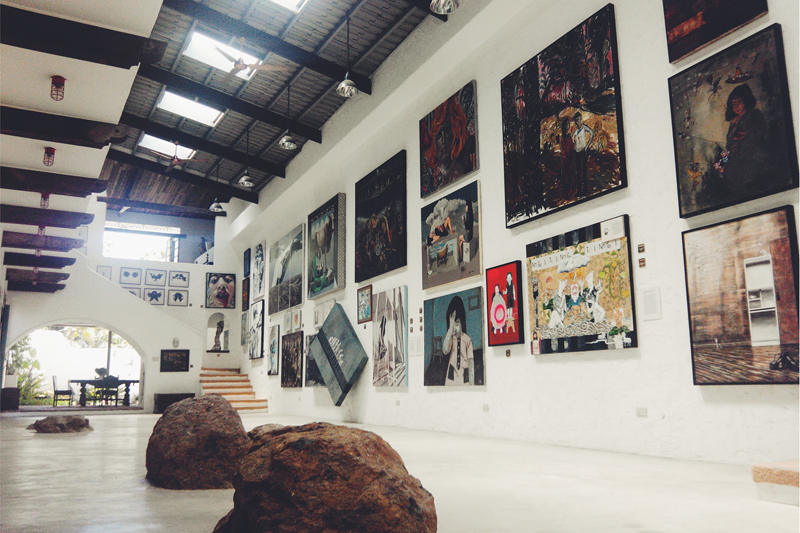

Best for: Art Enthusiasts, Photography, and Romantic Getaways.
Vibe: Serene, Artistic, and Mediterranean.


PINTO MUSEUM
Where Mediterranean Architecture Meets the Soul of the Sierra Madre.
Pinto Art Museum is not merely a gallery; it is an immersive Mediterranean-inspired sanctuary that serves as the doorway to the contemporary Philippine art scene. Spanning over two hectares of the lush Silangan Gardens, the museum is famous for its open-air villas that blur the line between indoor and outdoor living


